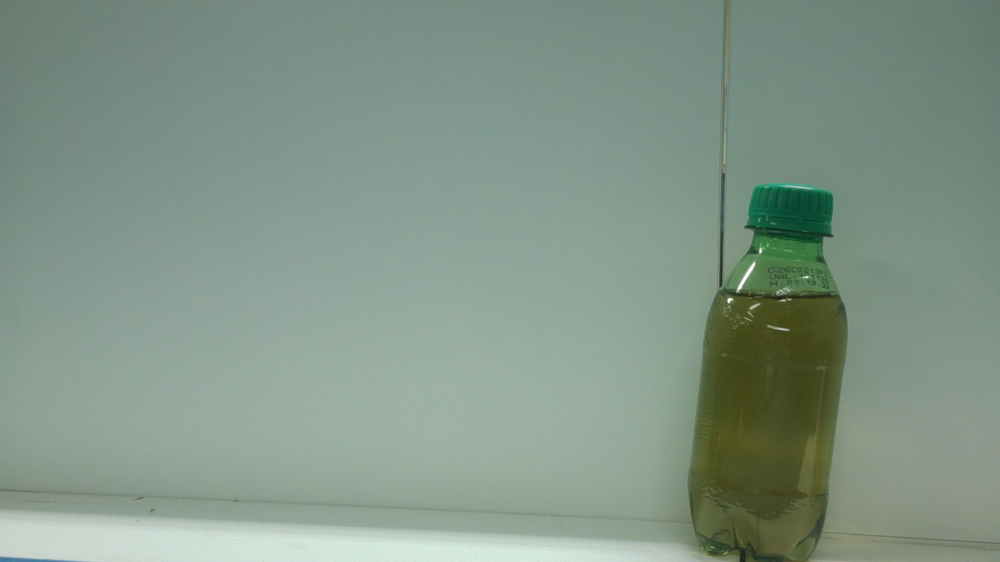
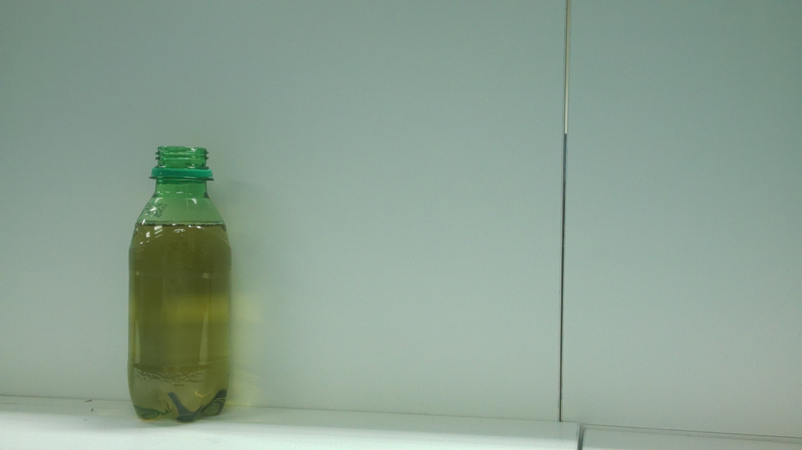
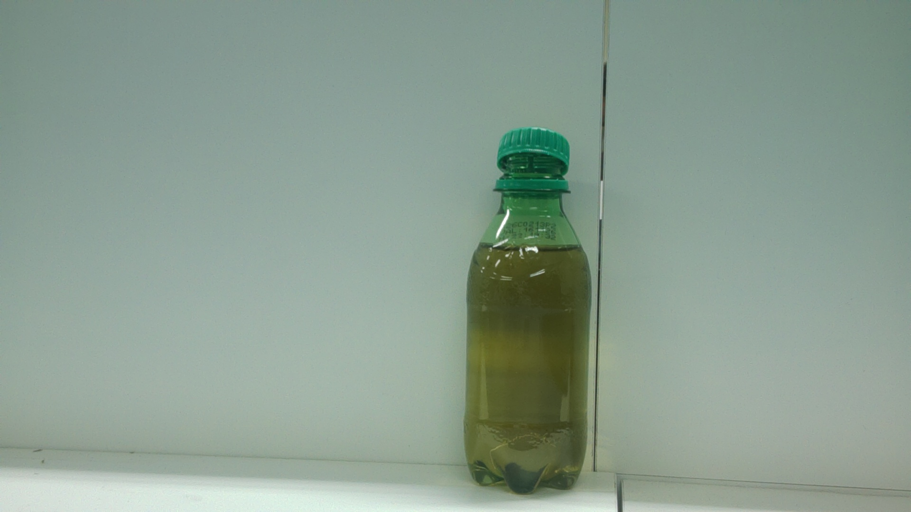
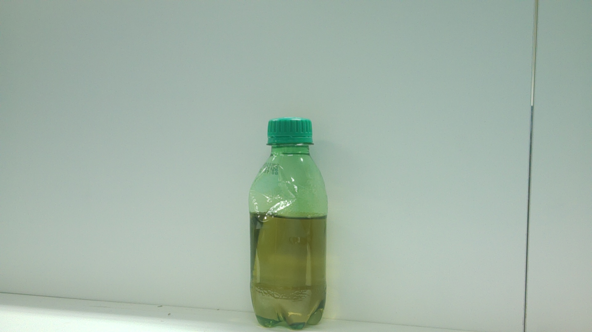
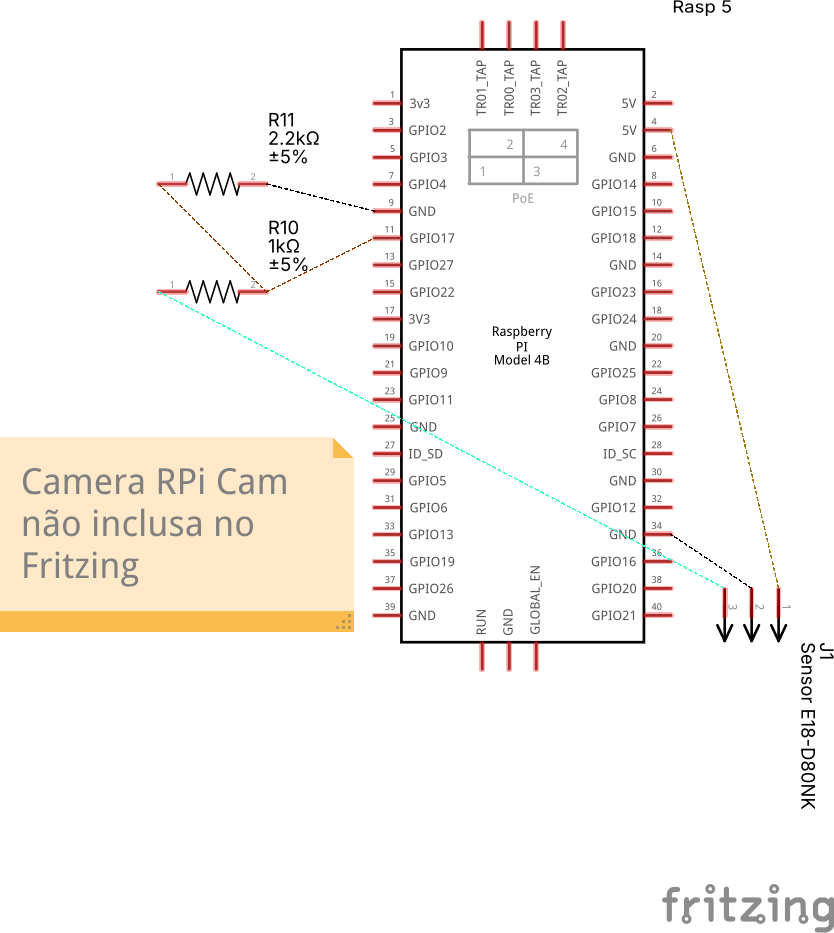
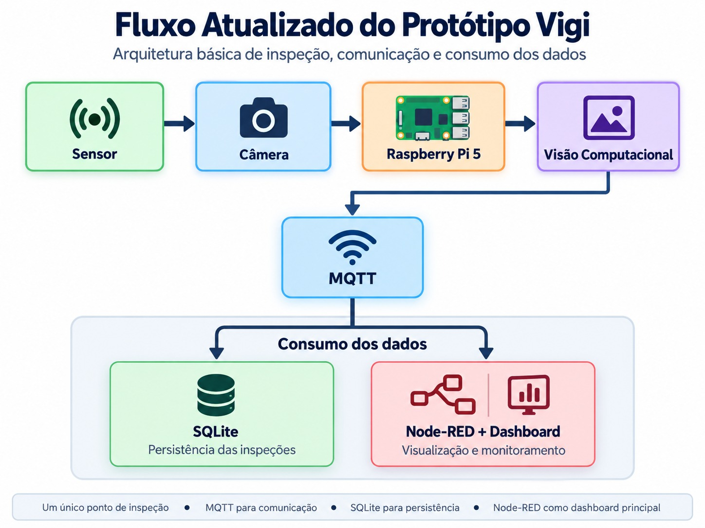

Visão Computacional na Borda (Edge AI) para Garantia da Qualidade em Linhas de Envase
Desenvolvido para atuar no ponto crítico entre o envase e o empacotamento, prevenindo que frascos defeituosos comprometam a integridade mecânica da esteira e a qualidade final do lote.
Trabalho de Conclusão de Capacitação em Sistemas Inteligentes Embarcados.
A alta velocidade da esteira impede a inspeção visual humana 100% contínua
Entrada de frascos vazios
Dosagem e rosqueamento
Ponto crítico de triagem rápida
Embalagem secundária
Expedição e logística
Imagens reais coletadas e validadas pelo hardware do Vigi para o treinamento da rede

Frasco íntegro, tampa devidamente rosqueada e vedada. Aprovado para empacotamento.

Risco imediato de derramamento de líquido, contaminação microbiológica e perda do produto.

Vedação imperfeita e vazamento sutil que inutiliza a embalagem secundária no transporte.

Gera emperramento imediato nas garras mecânicas da máquina empacotadora automática.
Integração ponta a ponta sem dependência de processamento em nuvem
Sensor E18-D80NK (3.3V)
Raspberry Pi 5 (8GB)
MQTT + SQLite + Dashboard
Integração compacta para acomodação direta na lateral da esteira industrial

Pipeline desacoplado com mensageria assíncrona e persistência transacional

O laço crítico de inspeção e registro não depende de rede externa para operar
Toda a visão computacional e a lógica de decisão acontecem no processador ARM Cortex-A76 da Raspberry Pi 5. Nenhuma imagem trafega para servidores externos ou serviços de nuvem durante o ciclo de inspeção.
Em eventual falha de rede ou queda momentânea do broker MQTT, o nó Edge enfileira os eventos localmente. A esteira não para e nenhum registro de não conformidade é perdido, sendo sincronizado assim que a conexão restabelece.
O acesso direto à GPIO pelo chip RP1 permite detectar a borda do sensor sem depender do tráfego de rede.
Modelo compacto com quantização INT8 para altíssimo throughput com baixo consumo térmico
Elementos reais em operação contínua simulando o ambiente fabril
Validação do fluxo padrão de aprovação de frasco na linha
Garrafa íntegra com tampa rosqueada perfeitamente no padrão de controle de qualidade.
Identificação em tempo real de falha crítica com registro preventivo e alerta operacional
Frasco sem tampa identificado no ponto de inspeção antes de avançar para a embaladora.
Estrutura de dados desacoplada garantindo rastreabilidade completa por lote
Payload validado por schema Pydantic e publicado assincronamente no tópico MQTT vigi/estacoes/{id}/inspecoes.
Monólito modular provendo endpoints REST e canal de streaming SSE
Rotas semânticas para consulta de inspeções por ID, filtros de não conformidade por data e métricas agregadas por turno.
Swagger UI gerado automaticamente com esquemas OpenAPI 3.0, facilitando testes e integração com sistemas MES da fábrica.
Conexão Server-Sent Events que transmite cada nova inspeção instantaneamente para os dashboards conectados sem necessidade de polling.
Supervisão visual para operadores e gerentes de qualidade em tempo real
Balanço técnico entre os requisitos homologados e a rota para industrialização
Como as informações geradas pelo Vigi transformam a rotina na esteira de envase
Ação Imediata e Segregação
Histórico e Análise de Causa-Raiz
Overall Equipment Effectiveness — Maximizando a produtividade do envase
Menos Tempo de Parada
Ao barrar frascos deformados antes da encaixotadora, elimina-se o tempo perdido com paradas para desobstrução mecânica de esteiras e limpeza de líquidos derramados.
Cadência Nominal
A linha opera em sua velocidade nominal de projeto, sem necessidade de desaceleração da esteira para viabilizar inspeção visual manual por amostragem.
Zero Defeito no Lote
Garantia de que 100% dos produtos expedidos estejam conformes e lacrados, eliminando retrabalhos, descarte de embalagens secundárias e devoluções.
* Nota Técnica: Os ganhos percentuais quantitativos no OEE dependem de amostragem em regime contínuo de produção industrial. A presente avaliação valida qualitativamente o impacto direto do sistema sobre os fatores causadores de perda.
Sistema validado de ponta a ponta com documentação completa para replicação
Todo o código-fonte, diagramas arquiteturais, esquemático elétrico e testes automatizados estão disponíveis no repositório do projeto.
Agradecemos à banca examinadora e ao programa PNAAT 2026.